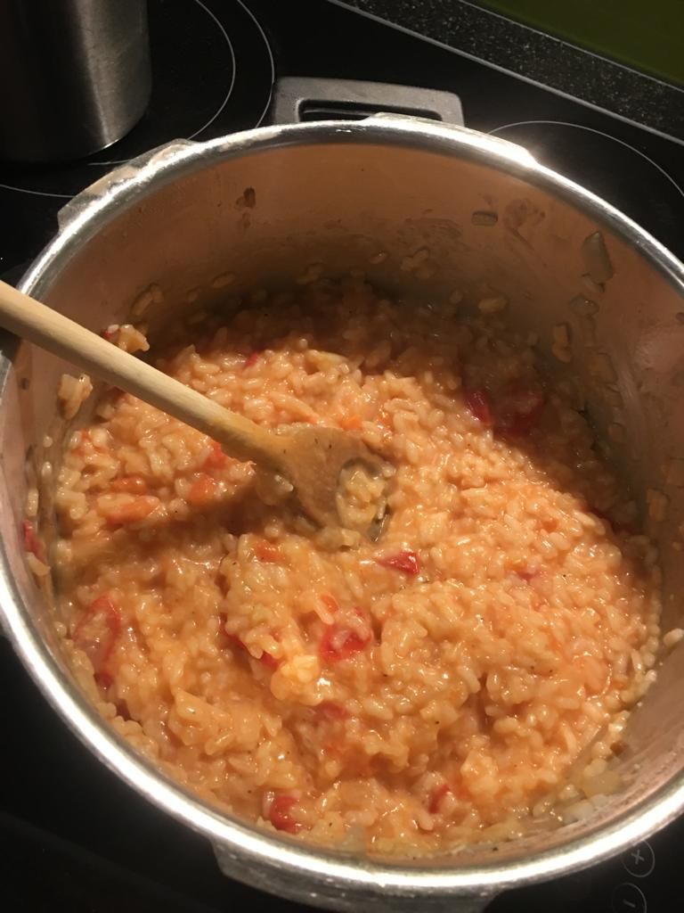
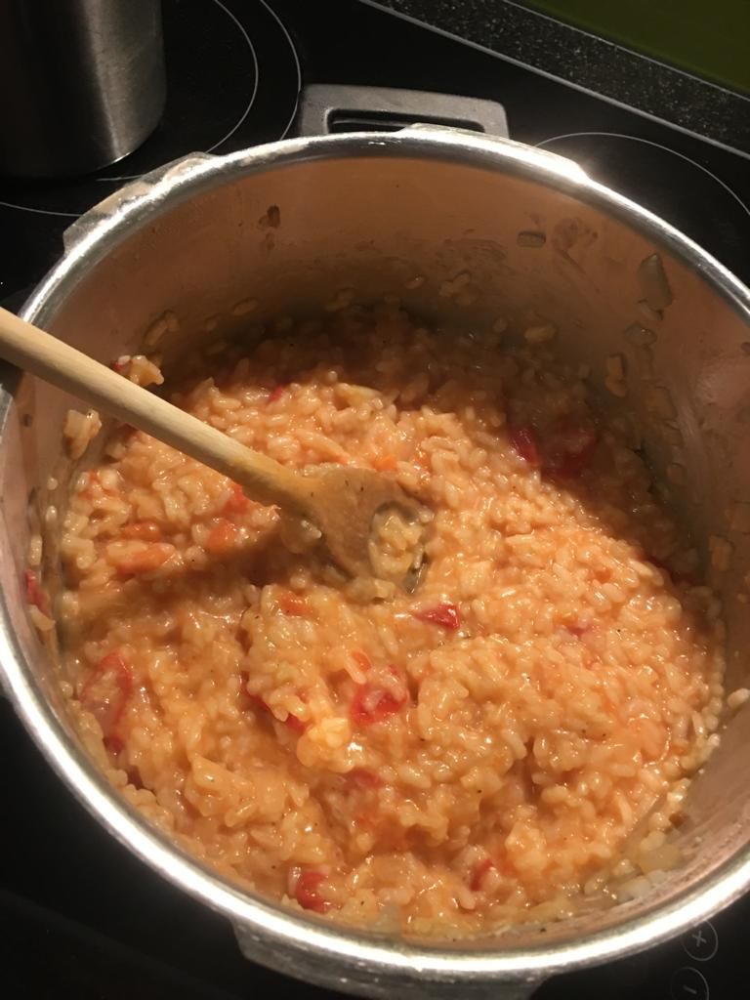
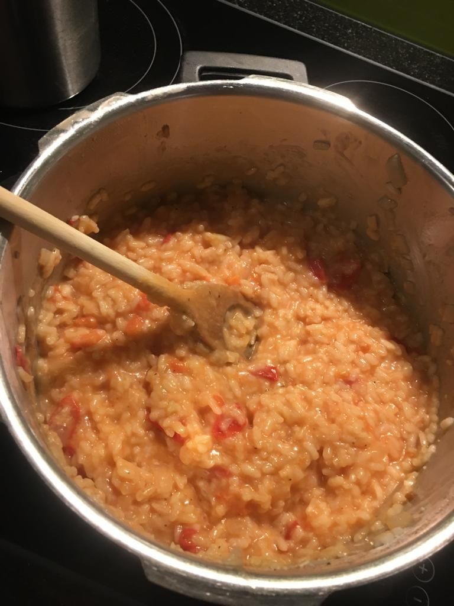
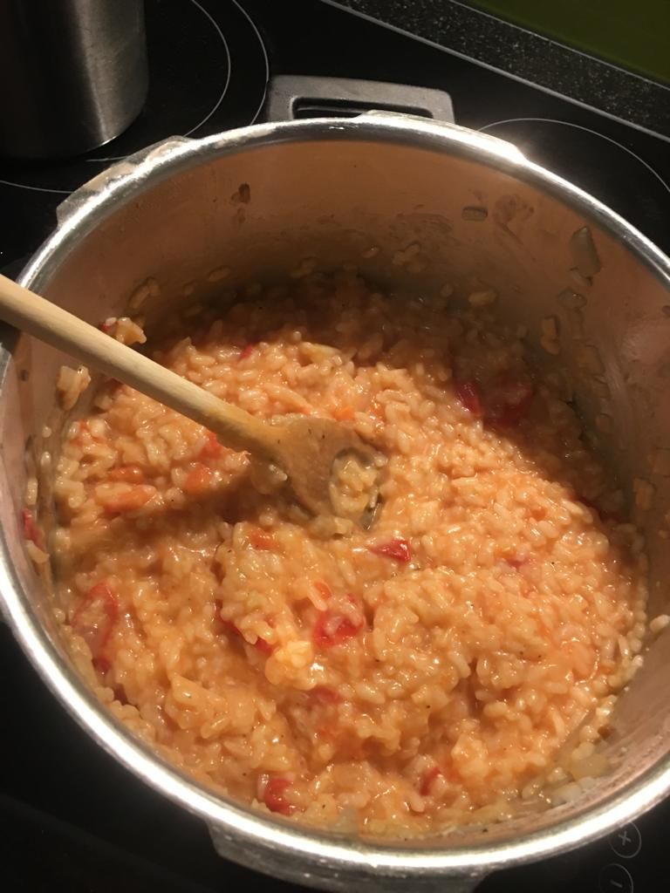

meine Reisen,Kochrezepte,diverse inspirationen, James Arthur, erfahrungen,warning passiv aktiv
hier zeige ich euch wie ich einen Kuchen aus dem Kopf zusammen gemixt habe. Es war ein Himbeerkuchen step 2
step 4 step 5 and done!
my own creation
wie kocht man nudeln?
als erstes Wasser in einer Pfanne aufkochen,dann das Wasser salzen und schlussendlich die Nudeln hinein geben.
and done!
my own creation
wie kocht man nudeln?
als erstes Wasser in einer Pfanne aufkochen,dann das Wasser salzen und schlussendlich die Nudeln hinein geben.
 
